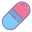
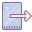

<mat-toolbar *ngIf="!isLoginActive">
    <mat-icon matPrefix class="healing-icon">healing</mat-icon>
    <span class="title">Kronsoft Internship Application</span>
    <span class="spacer"></span>
    <button mat-button routerLink="/products"><span></span>Products</button>
    <button mat-button routerLink="/stocks"><span></span>Stocks</button>
    <button mat-button routerLink="/account"><span></span>Account</button>
    <button mat-button (click)="logout()"><span></span>Logout</button>
</mat-toolbar>


